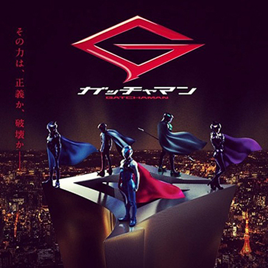
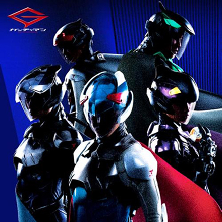

キャスト
健／鷲尾健
演 - 松坂桃李
「ガッチャマン」のリーダーで、ナンバーは0071。石の「適合者」として高い能力を持つ。武器は鳥型のブーメラン「バードラン」。真面目な性格で、任務遂行を絶対の掟とし、頑なに守っている。
ジョー／ジョージ浅倉
演 - 綾野剛
ISOヨーロッパ支部から移籍してきた凄腕の「ガッチャマン」。ナンバーは0062。武器は「羽根手裏剣」。健やナオミとは幼少期から「適合者」として訓練を受けてきた。ナオミに告白した直後にギャラクターの襲撃を受け、ナオミを失ったことから、ギャラクターに強い復讐心を抱いている。
ジュン／大月ジュン
演 - 剛力彩芽
「ガッチャマン」の紅一点。ナンバーは0283。健に恋心を寄せており、なかなか振り向いてもらえないが、それでもめげずにアタックし続ける。武器は電磁ヨーヨー。9歳の頃に両親がギャラクターの捕虜となった過去を持つ。石の適合率は健より高めだが、情緒不安定な面がある。
甚平／大月甚平
演 - 濱田龍臣
ジュンの弟。ナンバーは0284。コンピュータの扱いに長け、ハッキングなどの技術を最大限に発揮し、戦闘ではアメリカンクラッカー型の武器を操る。大人びているが、場の雰囲気を和ませるために子供っぽさを演じる。
竜／中西竜
演 - 鈴木亮平
鹿児島弁が特徴の心優しい性格で、怪力を活かした戦闘が得意。ナンバーは0135。ガッチャマンの専用機「ゴッドフェニックス」の操縦も担当。15歳まではストリートチルドレンだったが、石の「適合者」だった為にISOへ強制連行され、訓練を受けてきた。